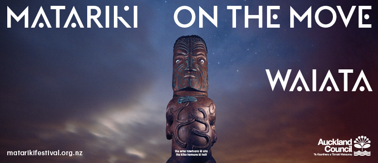

New Zealand Events - Upcoming
Matariki on the Move: Waiata?
Matariki on the Move tours Māori arts around Tāmaki Makaurau. This year there are three very different Matariki on the Move events; Kōrero, Ngahau and Waiata. Discover Māori entertainment and its significance to the music of the war era with an unmissable cabaret-style music showcase by the Modern Māori Quartet. This touring musical performance will be taking place at locations from Papakura to Pakiri. Tickets are going fast! Please note ticket holders will be given priority entry. Any tickets unclaimed 15 minutes prior to the start of the performance will be given to non-ticket holders. Limited tickets will be available at the door (free of charge). Matariki on the Move: Waiata is proudly supported by Te Wānanga o Aotearoa.
Comedy Night Friday Night
Queenstown loves a good laugh - so much so that we needed to repeat the show for a second night! Enjoy the Real Journeys Friday Night Party & Fireworks, then come and join the stellar lineup of Jeremy Corbett, Paul Ego, Dai Henwood, Justine Smith, James Nokise and Sara Devcich. Get your mates together and join in the fun!

Graeme James Highways Tour
“A man that must surely be poised to take over the New Zealand folk-music scene at any minute”- Libel Hitting the highways once again this winter is award-winning folk troubadour Graeme James. 2016 was an exciting year for the artist who released his debut original album News From Nowhere in September to great acclaim. The album was a finalist for the NZ Folk Album of The Year and the lead single ‘Alive’ gained second place in the Folk Category of the prestigious international Unsigned Only Songwriting Competition. Evidence of his endless hard work and hours spent on the road, Graeme started his musical journey busking on the streets of Wellington and sleeping in his trusty ‘Hotel Corona’. These stories and experiences have shaped his captivating and unmissable live show featuring electric fiddle, guitar, bass, baritone ukulele, beat boxing, harmonica, mandolin and his velveteen vocals all with the help of a trusty loop pedal. Graeme’s last tour almost sold out completely nationwide, so get it quick to hear the songs you love, and a couple of newbies. Please note that doors are open from 7pm, and the music will begin at 7.30pm.

The Great Coalfire Rib Eating Race
It will be loud, it will be messy and it will be loads of fun – it’s the Great Coalfire Rib Eating Race! Set in the heart of Queenstown at Coalfire on the Mall, this fun winter warming event will draw the crowds and see participants chowing down on sticky ribs in a race to see who can put most away in the shortest amount of time. With some awesome prizes up for grabs from the Wai Dining Group (Coalfire Queenstown, Public Kitchen & Bar, Bella Cucina & Finz Seafood & Grill) and spot prizes on the day! 1st prize $500 voucher for all Wai Dining Restaurants. 2nd prize $200 voucher for all Wai Dining Restaurants. 3rd prize $100 voucher for all Wai Dining Restaurants. Fired up and delivering smoky hot flavours, Coalfire is a uniquely Queenstown dining experience with a meat orientated menu using locally grown produce off the hills and farms of the South Island. Entry fee includes a t-shirt, whole rack of spicy ribs, 1 pint of lager, and a good time!

The Music of Strangers
Yo Yo Ma and the Silk Road Ensemble. Music/Doc - 92 mins. A movie that inspires hope and joy. The film screened at the 2016 New Zealand International Film Festival and was voted best documentary by audiences. It is one of the most moving films I have seen in a long time. Yo Yo Ma and the other members of the Silk Road Ensemble are not only brilliant musicians, they are inspirational human beings. Their passion for music and their ability to blend the music of different cultures is fully on display in the movie; sometimes their music filled me with joy; at other times it moved me to tears. The most moving scene for me was to see the two Syrian members of the Ensemble going into the Syrian refugee camps in Lebanon and Jordan and reaching out to the children their with their music and their message of hope. I defy anyone to watch it with dry eyes. Truly a movie for the times we are living in. If we get a good turn out then we plan to hold regular late night movies based around music and we already have a good selection of new release and old classic films waiting in the wings for the rest of 2017. Admission is a straight $12 and the bar will be open prior to the film screening, serving wine, beer and soft drinks, nibbles, ice cream and coffee also available. Tickets online and on the door.

Pacific Dance Festival 2017
Returning in 2017 after a hugely successful debut last year, the Pacific Dance Festival will launch an all new programme, running 15–24 June at Mangere Arts Centre in Auckland. Born out of the Pacific Dance Choreographic Laboratory (since 2009), the festival provides an opportunity for Pacific choreographers to create, develop, and perform original dance works in a celebration of Pacific cultures. This initiative by Pacific Dance New Zealand has expanded over two weeks, presenting a programme that embraces contemporary Pacific dance in the most populous Polynesian city in the world. Showcasing the diversity and joy of the world of Pacific Dance, audiences will be delighted with the programme on offer in the home of Auckland’s Pacific culture. With last year’s performances being noted as having “immense potential” (Theatreview) and “breaking down of stereotypes of what can be labelled ‘Pacific Dance’” (DANZ), tickets will be snapped up so get in quick. Pacific Dance Festival 2017 Program Thursday 15 and Friday 16 June 2017 - Wahine Toa Featuring: 'Tai Akaki' by Tepaeru–Ariki Lulu French, 'Ave' by Ufitia Sagapolute, 'West Meet South' by Losalia Milika Pusiaki, and "Found Words" by Julia Mage'au Gray Saturday 17 June 2017 - World Premier of 'Nu’u' - An Urban Pacific Story Featuring: Freshmans Crew Wednesday 21 and Thursday 22 June 2017 - Tamatoa Featuring: "Muamua and Keeping the Faith" by Joash Fahitua, "Fa’aafa" by Pati Tyrell, "Mea Tau" by Elijah Kennar, and "Tu Move" by the New Zealand School of Dance. Friday 23 and Saturday 24 June 2017 - ‘Double Bill' Featuring: 'Aumaga' by Le Moana and 'Le Mau' by Jasmine Leota’ Tickets for the Polypac pack includes tickets for each of the four different shows on various nights at your discretion: - Wahine Toa Nights - featuring our female artists - World Premier of Nu’u –featuring Freshmans Crew - Tamatoa Nights - featuring our male artists - Double Bill featuring Le Moana and Jasmine Leota Running alongside the dance festival will also be an exhibition of Pacific dance costumes not to be missed. Get in and book today.